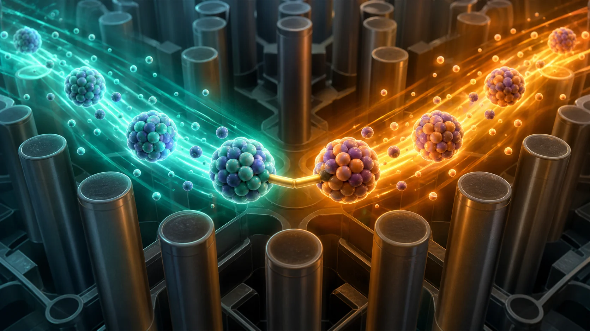
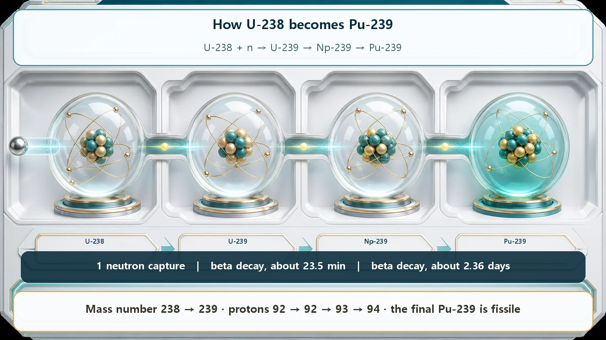
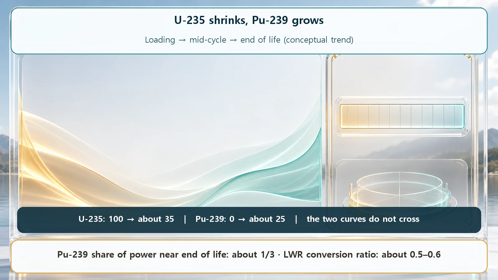

Long-Term Core Behavior & Fuel Cycle · 156
The Star Tires, but the Show Goes On — How U-235 Fades and Pu-239 Rises in Nuclear Fuel
One neutron capture and two beta decays turn fertile uranium-238 into fissile plutonium-239, which takes over part of the work as uranium-235 runs down. That is conversion, not endless breeding.

While a reactor runs, fissile uranium-235 is split and steadily used up, but at the same time uranium-238 captures neutrons and, after two beta decays, becomes new fissile fuel: plutonium-239. This is conversion. Near the end of the fuel's life roughly one third of the power comes from that new plutonium, yet a light-water reactor still makes only a little over half as much new fuel as it consumes.
Fill a reactor with fuel once and it runs for more than a year without a break. That seems odd: the fuel that keeps the fire going, uranium-235, is being split and used up the whole time, like a shop whose stock shrinks with every customer. Why doesn't it run out much sooner? Because while U-235 fades, a new fuel that wasn't there at the start is quietly growing in the same fuel rods. Its name is plutonium-239 (Pu-239). Let's follow this handover: how U-235 decreases while Pu-239 increases.
The star of the show is losing her voice
Picture a long-running stage show with one brilliant lead actor. Let's call her U-235. In the early weeks she carries practically the whole production by herself. But night after night, even the best actor slowly loses her voice and her stamina.
That is exactly what happens to U-235 in a reactor. U-235 splits apart and releases energy when it is hit by just one slow neutron, which makes it what physicists call fissile: a material that fissions easily. While the reactor makes electricity, U-235 atoms are split and used up one by one, so the longer it runs, the fewer remain. Left at that, the show should slowly lose its power. But here comes the twist.
A backstage extra turns into a new lead
Backstage, there is a huge cast of extras. Their name is U-238, and it makes up more than 95% of the uranium in the fuel. U-238 is a frustrating performer: hit it with a slow neutron and it almost never splits, so it adds no power to the show directly.
But this extra has a surprising story. U-238 is actually rather good at quietly catching (capturing) a passing neutron. Think of it as being handed a note backstage that says, "You're on next." From the moment it gets that note, two quick costume changes begin:
- First, having swallowed the neutron, U-238 becomes a little heavier and turns into U-239.
- U-239 is unstable and doesn't last long. In about 23 minutes it throws out a tiny particle (an electron) from inside itself, a change called beta decay, and becomes a different element, neptunium-239 (Np-239). That's the first costume change.
- Np-239 isn't the final form either. After about 2.4 days it goes through the same kind of beta decay once more and is reborn as plutonium-239 (Pu-239). Second costume change, and the transformation is complete.
Remarkably, the finished Pu-239 is fissile, just like U-235. One note (a single neutron) and two costume changes (two beta decays) have turned an extra into a new lead. In one line:
U-238 →(captures a neutron)→ U-239 →(about 23 minutes)→ Np-239 →(about 2.4 days)→ Pu-239

Both decays are quick on reactor time scales (minutes to days), so inside the core, a U-238 nucleus that captures a neutron is, for practical purposes, Pu-239 within a few days.
When the star fades, the understudy steps in
As the run goes on, the original star, U-235, dwindles, while the new lead, Pu-239, finishes its transformation backstage and steps onstage to share the work of making power. Draw the two on a graph and the U-235 line slowly comes down while the Pu-239 line starts at zero and climbs. A growing share of the work passes from one to the other, like a baton being handed over in a relay.
How much is handed over? Near the end of the fuel's life, roughly one third of the reactor's total power comes from this newly born plutonium. That's from a performer who wasn't even in the cast at the start.
This ability to make some of its own new fuel lets a reactor keep generating much longer than it could on U-235 alone: understudies keep being trained in the wings, so the run goes on.

Conversion, not endless multiplication
There is a very common misunderstanding to clear up here. "If using fuel makes new fuel, doesn't the reactor keep multiplying its fuel forever?" It doesn't.
Turning a material that serves as nuclear raw material (U-238) into fissile fuel (Pu-239), as we've just seen, is called conversion. In the light-water reactors that are most widely used, though, for every U-235 atom consumed, only a little over half as many Pu-239 atoms are made. The reactor doesn't fully replace what it uses. Think of a field that, as you plant its seed, yields only about half as much new seed: it keeps the field going for a long time, but the seed doesn't multiply on its own.
The special case where a reactor makes more new fuel than it consumes is called breeding, and reactors designed for it are breeder reactors. Ordinary light-water power reactors are not breeders; they are "converter reactors" that replace part of what they consume. So "plutonium is produced" never means "the fuel grows without limit."
One more thing: the new Pu-239 doesn't simply pile up. It is fissile too, so from the moment it steps onstage it also absorbs neutrons and splits, releasing energy. (Some of it is used up that way, and some captures another neutron and becomes a different nuclide.) The amount of Pu-239 is therefore a contest between "how much is being made" and "how much is being used again," and its growth slows over time. This performer isn't just born; it goes straight to work.
Sorting out the easily confused terms
A few terms have come up, so let's line them up:
- Fissile vs fertile. U-235 and Pu-239 split readily even with slow neutrons: they are the leads who carry the show. U-238 rarely splits on its own, but it can capture a neutron and turn into a lead; it is the fertile "raw material." Today's story was about raw material (U-238) turning into a lead (Pu-239).
- Conversion and fission are different events. Conversion is one nuclide changing into another (U-238 → Pu-239). Fission is a nucleus splitting apart and releasing energy (U-235 or Pu-239 splitting). The words may sit close together, but they are completely different things.
- "Plutonium = something frightening." Plutonium production is a natural physical process that always happens in a normally operating reactor, and it contributes substantially to power generation. Spent fuel and the plutonium in it are managed under the International Atomic Energy Agency (IAEA) system of accounting and monitoring (safeguards). This article focuses only on the physical process itself.
So why does this matter?
This handover is a key to why nuclear plants are designed and operated the way they are. Because the fuel's composition changes, its ability to keep the chain reaction going changes over time. With fresh fuel, operators hold down the extra reactivity; as the fuel is used up and loses strength, they gradually release that hold. When to refuel, and which fuel goes where in the core, are all planned with this change in mind.
And spent fuel still contains a considerable amount of uranium, plus the plutonium made this way. Contrary to the idea that used fuel leaves only ash, it still holds seeds of usable energy.
Today's takeaways
- While a reactor runs, fissile U-235 is split and steadily decreases.
- Meanwhile U-238 captures a neutron and goes through two beta decays (U-239 → Np-239 → Pu-239) to become new fissile fuel.
- Near the end of the fuel's life, roughly one third of the power comes from newly made plutonium.
- This is conversion: a light-water reactor replaces only a little over half of what it consumes, unlike breeding, where more is made than is used.
- The change in composition underlies reactivity control, refueling and fuel management.
In the same fuel, one performer fades while another rises, and the fuel trains its own understudy.